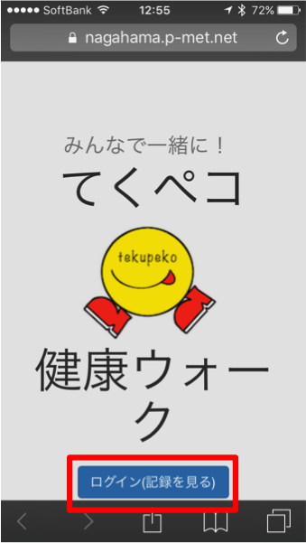

ながはま健康ウォークマニュアル
STEP1: ながはま健康ウォークのサイトにログインしよう
今年のながはま健康ウォークのユーザページにログインする方法をご説明します。
iPhoneからはSafari、AndroidからはChrome、パソコンからはMicrosoftEdge
Chrome Firefoxのアイコンを押してインターネットを起動します。
こちらまたは下記QRコードから ながはま健康ウォークのページにいきます。

ログインを押して、事前にお送りさせていただいたIDとパスワードをご入力ください。
IDはnagaから始まるもの、パスワードは数字6ケタです。


このようなユーザページが表示されれば、ログイン完了となります。
STEP2: 歩数を手動入力しよう
歩数計に記録された歩数を手動で反映させる方法をご説明します。
ユーザページを下にスクロールしていくと、ご自身の記録の下に歩数の入力欄と反映ボタンが現れます。
「今日の歩数」と書かれた欄に歩数計に表示されている歩数を入力していただき、反映を押します。
今日のご自身の記録が、入力した歩数に変わっていれば反映完了となります。
STEP3: 今までの記録を入力しよう
前日など、イベント期間中の以前の歩数を入力する方法をご説明します。
手動入力フォームの下にあるチャレンジ中の記録の登録を押します。
登録したい日付の下のフォームにその日の歩数を入力し、送信を押します。
入力された日にちのご自身の記録が、入力した歩数に変わっていれば反映完了となります。
歩数計で参加されるにあたって
歩数計で参加されるにあたっていくつかの注意とお願いがあります。
- 歩数計は貸し出しです、壊さないように大事に扱ってください。
- 歩数計は最後に回収し、運営者が読み取りを行います。もし、手動入力の値が間違っておられた場合は、読み取り後の結果を元に 完歩の判断を行いますので、あらかじめご了承ください。
- 歩数計の表示は14日前までの記録しか表示されません。14日以前のデータは表示されなくなりますので、ご注意ください。(歩数計の中には保存されておりますので、 もし入力を忘れられてもご安心ください。)
お問い合わせ先
みんなで一緒にながはま健康ウォーク実行委員会事務局
Tel: 0749-65-7779